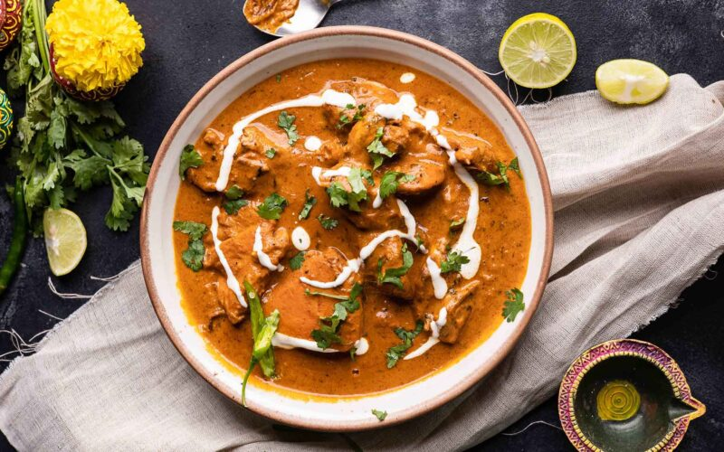

Non-VegButter Chicken
Tender chicken in a velvety tomato-cream gravy. The iconic dish of North India — rich, fragrant, and deeply satisfying.
View RecipeSimple, authentic Indian recipes with clear instructions — straight from the heart of the subcontinent.
Rasoi means kitchen in Hindi. A curated collection of classic Indian dishes — from rich North Indian curries to celebratory rice dishes and sweet desserts. Each recipe is written to be approachable whether you are cooking for the first time or just looking for a reliable reference. Made with care by Soumya.

Non-VegTender chicken in a velvety tomato-cream gravy. The iconic dish of North India — rich, fragrant, and deeply satisfying.
View Recipe Veg
Veg
Slow-cooked black lentils in a buttery tomato sauce. Smoky, creamy, and comforting — best eaten with fresh naan.
View Recipe Non-Veg
Non-Veg
Fragrant basmati rice layered with spiced chicken, slow-cooked in the dum style. A festive masterpiece.
View Recipe Veg
Veg
Fresh cottage cheese cubes in a smooth spiced spinach gravy. Nutritious, vibrantly green, and ready in under 40 minutes.
View Recipe Dessert
Dessert
Soft milk-solid dumplings soaked in rose-cardamom sugar syrup. India's most beloved dessert — served warm at every celebration.
View Recipe